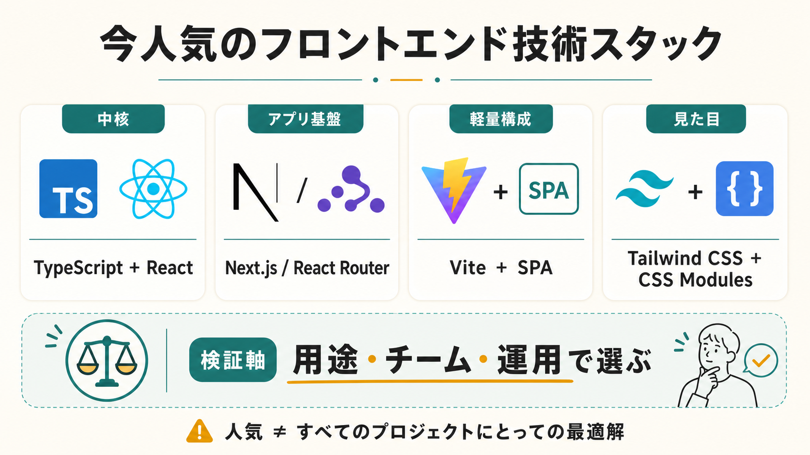

フロントエンドで今人気の技術スタックは？
2026年6月15日時点で「人気があり、実務でも選びやすい」フロントエンド構成を、調査データと公式ドキュメントをもとに整理する。

結論
今もっとも無難に人気スタックと呼びやすいのは、TypeScript + React + Next.js + Tailwind CSSです。公開ページ、認証付きアプリ、API連携、SSR/SSGの使い分けまで1つの枠組みで扱いやすく、採用事例と学習資源も多いからです。
ただし、すべてのプロジェクトでNext.jsが最適という意味ではありません。管理画面や社内ツールのようにSEOが重要でない場合は、TypeScript + React + Vite + React Routerの方が軽く扱いやすいことがあります。コンテンツ中心のサイトではAstro、Vue文化のチームではNuxt、軽量なUI志向ならSvelteKitも候補になります。
人気の見方
ここでの「人気」は、求人・採用数そのものではなく、公開調査での利用実績、実務利用、公式ドキュメント上の推奨、周辺ツールの成熟度から見たものです。Stack Overflow Developer Survey 2025では、JavaScript、HTML/CSS、TypeScriptが主要言語として上位に出ており、Web frameworks and technologiesでもReact、Next.js、Vue.jsが中心的な選択肢として扱われています。
State of JS 2024では、仕事で使うフロントエンドフレームワークとしてReactが最上位、Vue.jsとAngularが続き、Svelteは利用増と高い好意的評価が目立ちます。ビルドツールではViteが急速に伸び、仕事での利用数もwebpackにほぼ並んでいます。
本命スタック
| 層 | 人気の選択肢 | 理由 |
|---|---|---|
| 言語 | TypeScript | JavaScriptのエコシステムを使いながら、型で変更リスクを下げられる。チーム開発で特に強い。 |
| UI | React | 利用者、情報量、周辺ライブラリが大きく、公式にもフレームワーク利用が推奨されている。 |
| アプリ基盤 | Next.js | ルーティング、SSR、SSG、サーバー処理、画像最適化などをまとめて扱える。 |
| 軽量なSPA基盤 | Vite + React Router | 高速な開発体験と単純な静的配信に向く。SSRが不要な画面では過剰な仕組みを避けられる。 |
| スタイリング | Tailwind CSS / CSS Modules | Tailwindはユーティリティ中心で実装速度が出やすい。CSS Modulesは局所的なCSS管理に向く。 |
| テスト | Vitest / Testing Library / Playwright | 単体、コンポーネント、E2Eを分けて検証しやすい。Vite系の構成とも相性がよい。 |
用途別の選び方
- 公開サイト、SEO、CMS連携が重要ならNext.js。 ページごとにSSG、SSR、動的処理を選べるため、プロダクトサイトやメディア、ECに向きます。
- 管理画面、社内ツール、SaaSの操作画面ならVite + React Router。 検索流入より操作性と開発速度が重要なら、軽いSPA構成で十分なことが多いです。
- コンテンツ中心で一部だけ動けばよいならAstro。 JavaScriptを必要箇所だけに絞りやすく、ブログ、ドキュメント、LPと相性がよいです。
- チームがVueに強いならVue + Nuxt。 React系に寄せるより、既存知識とコンポーネント資産を活かした方が速い場合があります。
- 小さく高速なUIを重視するならSvelteKit。 採用母数はReactより小さい一方、State of JSでは好意的評価が高く、選ぶ理由はあります。
避けたい決め方
「人気だからNext.js」「軽いからVite」のように名前だけで決めると失敗しやすいです。判断軸は、SEOが必要か、リクエストごとにHTMLを変えるか、認証や権限が複雑か、チームが運用できるか、デプロイ先に合うかです。
推測としての現場感では、2026年時点の新規開発ではTypeScriptを外す理由は少なく、React系を選ぶと採用・引き継ぎ・ライブラリ選定で困りにくいです。一方、既存チームがVueやSvelteに熟練しているなら、流行に合わせてReactへ寄せるより、既存の強みを活かす方が合理的です。
迷ったときの初期構成
個人開発や小規模チームで迷うなら、まずは次のどちらかに寄せると判断しやすくなります。
- 公開ページもアプリ機能もある: TypeScript + React + Next.js + Tailwind CSS + Playwright
- ログイン後アプリ中心: TypeScript + React + Vite + React Router + TanStack Query + Tailwind CSS
- 記事・ドキュメント中心: Astro + TypeScript + 必要な部分だけReactまたはVue